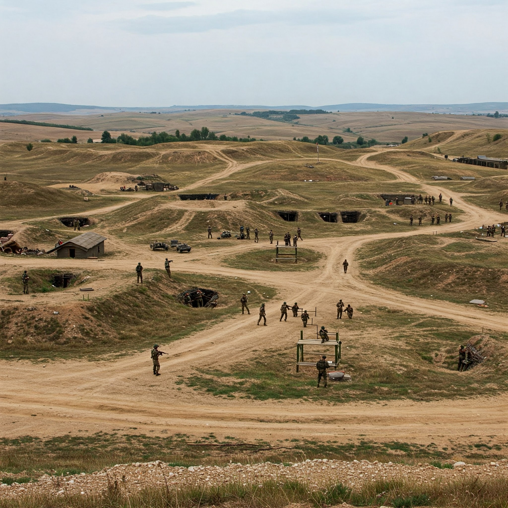

6. Дейности
Първоначално, младите трябва да бъдат обучени относно инициативата. Също така, трябва да се покаже, че това, което ще бъде
осъществено няма да е нещо лошо, а ще подпомогне държавата и тях самите. След ясното разписване на проекта и неговото представяне на различни
групи от хора, вече ще трябва да се водят преговори за него с "Министерство на отбраната". Всичко това ще отнеме около месец.
Ако проекта бъде одобрен, то тогава ще започне неговото осъществяване. Трябва да се осигурят различни полигони и инструктори, които да обучават
младежта. Нужните средства ще трябва да бъдат отделени от държавния бюджет. След това ще се планира точно от кога ще влезе в сила това обучение (например 1 януари, 2027).
Последните щрихи ще са да се осигурят места за пребиваване на обучаваните, както и храна, и дрехи. Това би отнело 1 до 2 години, в зависимост от сложността на положението.
